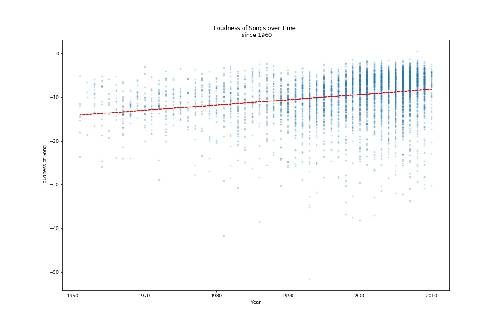
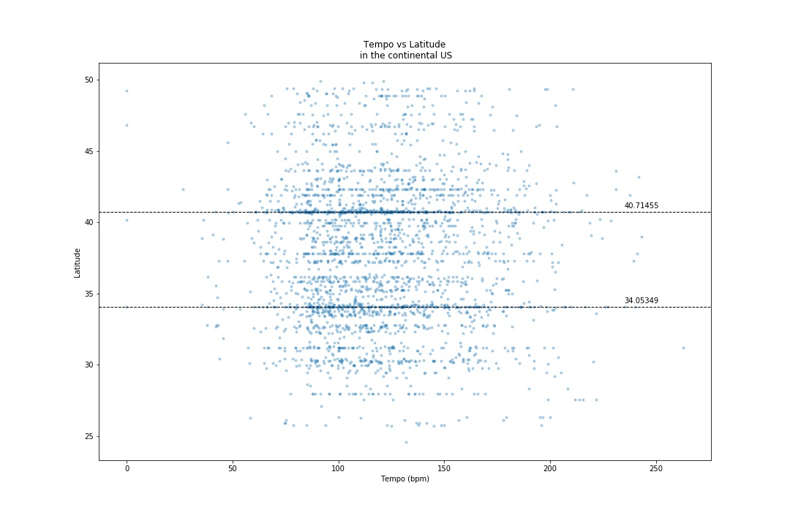
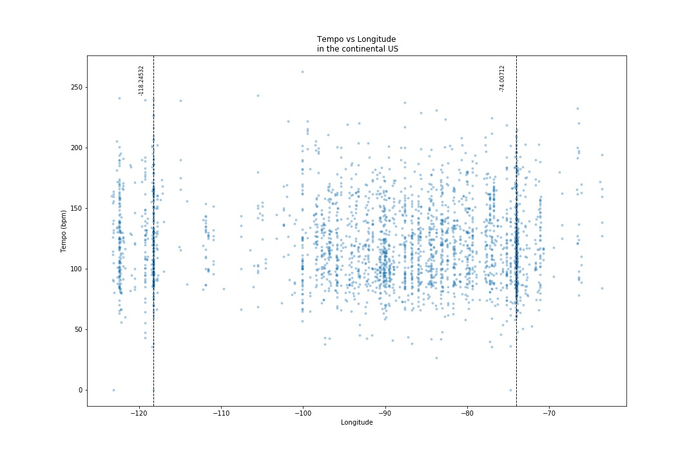

<!DOCTYPE html>
<html lang="en-us"></html>
    <head>
        <meta charset="utf-8">
        <title>
            "Music to our ears: home"
        </title>
        <link rel="stylesheet" href="https://stackpath.bootstrapcdn.com/bootstrap/4.3.1/css/bootstrap.min.css" integrity="sha384-ggOyR0iXCbMQv3Xipma34MD+dH/1fQ784/j6cY/iJTQUOhcWr7x9JvoRxT2MZw1T" crossorigin="anonymous">
    </head>
    <nav class="navbar navbar-expand-lg navbar-dark bg-dark">
        <a class="navbar-brand" href="#">Homework 11</a>
        <button class="navbar-toggler" type="button" data-toggle="collapse" data-target="#navbarColor02" aria-controls="navbarColor02" aria-expanded="false" aria-label="Toggle navigation">
          <span class="navbar-toggler-icon"></span>
        </button>
      
        <div class="collapse navbar-collapse" id="navbarColor02">
          <ul class="navbar-nav mr-auto">
            <li class="nav-item active">
              <a class="nav-link" href="landing.html">Home <span class="sr-only">(current)</span></a>
            </li>
            <li class="nav-item">
              <a class="nav-link" href="#">Plots</a>
            </li>
            <li class="nav-item">
              <a class="nav-link" href="#">Comparison</a>
            </li>
            <li class="nav-item">
              <a class="nav-link" href="#">Data</a>
            </li>
          </ul>
        </div>
    </nav>
    <body>
        <h1>what are we doing here</h1>
        <div>
            This dataset is a 10,000 record subset from the Million Song Dataset, sourced from the Echo Nest. 

            Credit is given to:
            Thierry Bertin-Mahieux, Daniel P.W. Ellis, Brian Whitman, and Paul Lamere. 
            The Million Song Dataset. In Proceedings of the 12th International Society 
            for Music Information Retrieval Conference (ISMIR 2011), 2011
        </div>
        <h1>Available Charts</h1>
        <div>
            <a href="visualization1.html"> Song Length over Time</a>
            <a href="visualization1.html"> 
                
            </a>
            <p>
                Paragraph 1
            </p>
        </div>
        <div>
            <a href="#"> Song Loudness over Time</a>
            <a href="#"> 
                
            </a>
            <p>
                Paragraph 2
            </p>
        </div>
        <div>
                <a href="#"> Tempo vs North/South</a>
                <a href="#"> 
                    
                </a>
            <p>
                Paragraph 3
            </p>
            </div>
        <div>
                <a href="#"> Tempo vs West/East</a>
                <a href="#"> 
                    
                </a>
                <p>
                    Paragraph 4
                </p>
            </div>
            <script src="https://code.jquery.com/jquery-3.3.1.slim.min.js" integrity="sha384-q8i/X+965DzO0rT7abK41JStQIAqVgRVzpbzo5smXKp4YfRvH+8abtTE1Pi6jizo" crossorigin="anonymous"></script>
            <script src="https://cdnjs.cloudflare.com/ajax/libs/popper.js/1.14.7/umd/popper.min.js" integrity="sha384-UO2eT0CpHqdSJQ6hJty5KVphtPhzWj9WO1clHTMGa3JDZwrnQq4sF86dIHNDz0W1" crossorigin="anonymous"></script>
            <script src="https://stackpath.bootstrapcdn.com/bootstrap/4.3.1/js/bootstrap.min.js" integrity="sha384-JjSmVgyd0p3pXB1rRibZUAYoIIy6OrQ6VrjIEaFf/nJGzIxFDsf4x0xIM+B07jRM" crossorigin="anonymous"></script>    
    </body>
</html>